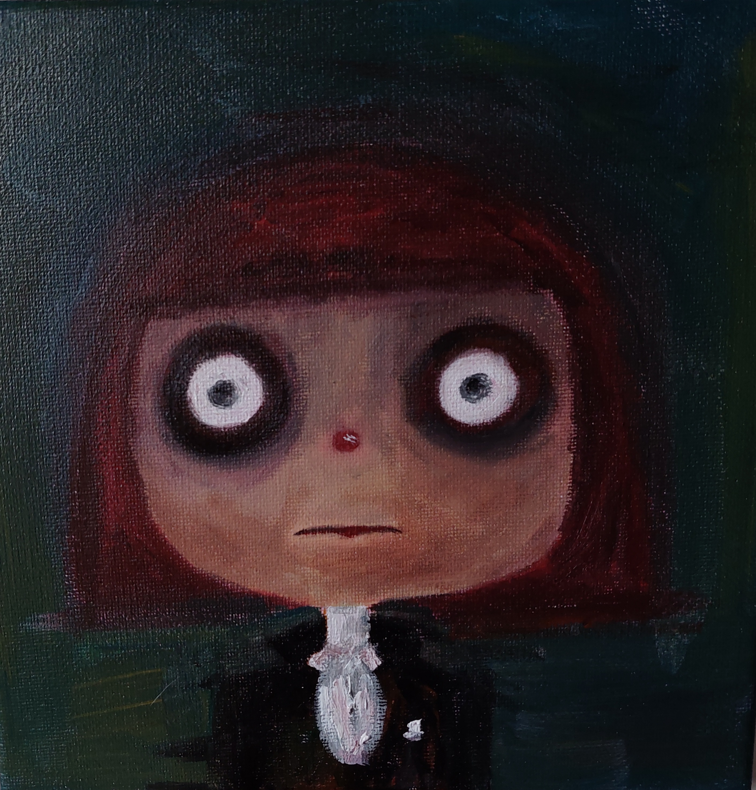
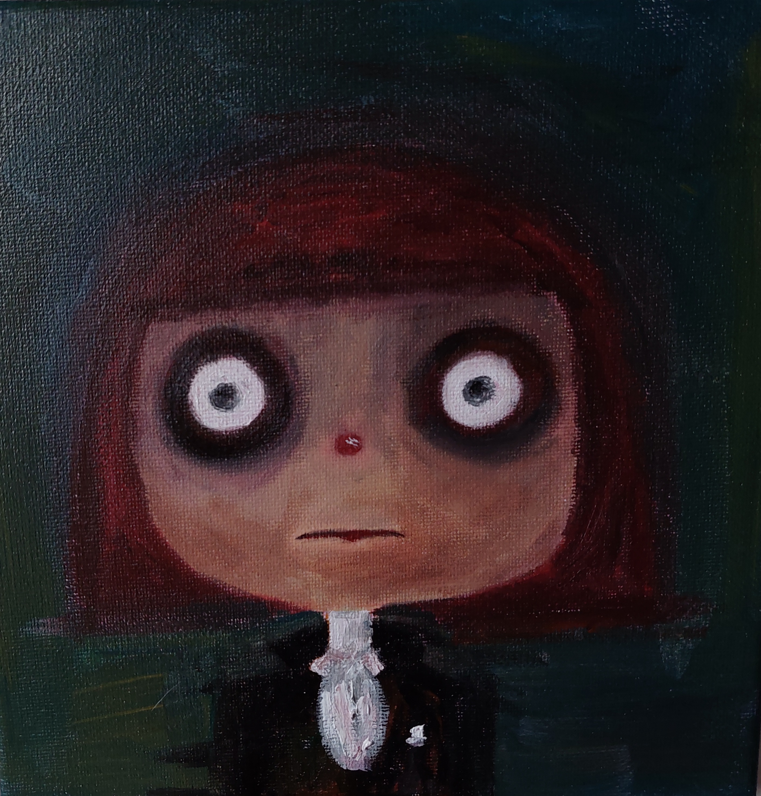

Mis Obras
Las pinturas hablan de la salud mental, muchas veces estamos en constante lucha con nosotros mismos para mantenernos a flote y no decaer por el cansancio mental. La mente puede ser nuestro mejor amigo o nuestro peor enemigo, por eso la importancia de exteriorizar lo que estas sintiendo.Podes identificarte con el dolor que transmite cada obra?

 
